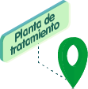
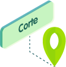
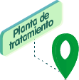
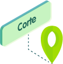

Te damos algunas recomendaciones que te ayudarán a desarrollar esta experiencia:

Ten presente la duración del curso y programa tus espacios de estudio.

Busca un lugar tranquilo para estudiar y evita las distracciones, esto te ayudará con tus niveles de concentración.

Te sugerimos hacer uso de audífonos.

Este curso cuenta con sistema Closed caption en los contenidos audiovisuales.
Conoce nuestros botones

Cuando encuentres este icono podrás profundizar en las temáticas abordadas.

Menú
Para conocer las temáticas que vas a explorar haz clic aquí.

Ayuda
Si quieres recordar el uso de los botones haz clic aquí.

Logros
Para conocer tus avances y porcentajes haz clic aquí.

Audio
Cuando encuentres este ícono podrás activar o desactivar la pista musical del curso.

Salir
Para salir del curso haz clic aquí.

Si quieres avanzar haz clic aquí.

Para regresar a la pantalla anterior haz clic aquí.
¡Hola! Si estás aquí es porque ya eres residente de la Ciudadela Verde M-risk del Grupo EPM.
¿Ahora quieres conseguir tu ciudadanía?
Para lograrlo, seguiremos la misma dinámica del curso 1. Porque quien tiene la ciudadanía debe conocer a profundidad el lugar en el que habita.
En este curso te llevaré por un recorrido a otros lugares importantes de nuestra ciudadela, para que vayas aprendiendo más de M-risk y puedas obtener estampillas que acrediten tu ciudadanía. ¿Vamos?
Pasa a la siguiente página para continuar.
Antes de ir a la zona que visitaremos en este curso, quiero presentarte una información importante que te servirá para entender aspectos fundamentales de los lugares que vamos a visitar:
Ahora que conocemos esos elementos claves, comencemos el recorrido de esta zona entrando al primer lugar que vamos a recorrer:
La planta de tratamiento de aguas residuales (PTAR) San Fernando, ubicada en la zona norte de la ciudadela, actualmente está en construcción.
Pasa a la siguiente página para continuar.
Ciudadela M-risk
Grupo EPM

 




Planta de tratamiento de aguas residuales San Fernando
Módulos de proyectos de M-risk
Una planta de tratamiento de aguas residuales – PTAR- es una infraestructura que permite la depuración y saneamiento de una fuente de agua y se devuelve a la fuente principal de forma segura para el ambiente. Por eso actualmente está en construcción dicha instalación, que es de gran importancia para mejorar la calidad de vida de los ciudadanos.
El tratamiento de aguas en M-risk se realizará básicamente en tres etapas:
- Tratamiento preliminar y primario, que elimina del 40% al 60% de los sólidos.
- Tratamiento secundario, que elimina aproximadamente el 90% de los contaminantes.
- Tratamiento terciario para la eliminación de lodos.
Sin estas fases no sería posible completar la limpieza de nuestras aguas y te cuento esto porque es muy importante que entiendas cómo las etapas de un proceso, sea cual sea, son muy valiosas para lograr un resultado esperado.
Con esta misma idea trabajamos el módulo de Proyectos. Entendiendo que un proyecto en el contexto de la plataforma M-risk se concibe como “toda obra o actividad desde la planeación, emplazamiento, instalación, construcción, montaje, operación, mantenimiento, desmantelamiento, abandono y/o terminación de todas las acciones, usos del espacio, actividades e infraestructura relacionados y asociados con su desarrollo”, en consonancia con el artículo 2.2.2.3.1.1., Capítulo 3 del Decreto 1076 del 2015, Sector Ambiente y Desarrollo Sostenible.
Ahora que conoces porqué es importante un lugar como nuestra planta de tratamiento, concibiendo las fases de desarrollo de un proyecto, pasemos a revisar algunas generalidades de la plataforma para poder abordar el módulo de proyectos de M-risk.
Generalidades: Acceso a la plataforma
Conocimiento de la plataforma M-risk
En una plataforma tecnológica es muy importante conocer el glosario de conceptos y funcionalidades, pues del entendimiento de la terminología dependerá la comprensión y claridades para el manejo de la plataforma. Por eso, te invitamos a que consultes este recurso con información valiosa para ti:
Aprendamos más
Puedes consultar este recurso para conocer la terminología de la plataforma M-risk.

Los módulos son un conjunto de herramientas especializadas dentro de la plataforma M-risk, que permiten la gestión de la información de los datos registrados.
Existen dos tipos de módulos: módulos base y módulos de gestión.
Los módulos permiten conocer el estado de cada proyecto en cuanto a los actos administrativos emitidos por las diferentes autoridades competentes y el registro, seguimiento y cumplimiento de las obligaciones asociadas.
¡Veamos cada uno de estos módulos!
Pasa a la siguiente página para continuar.

Para interactuar con los respectivos módulos, existen unas herramientas o funcionalidades que permiten operar los módulos de gestión, por ejemplo, actividades, web gis, biblioteca, etc. que independientemente de cuántos módulos de gestión se contraten, siempre se tendrán acceso a ellos. Se activan los íconos en la parte superior derecha a izquierda en el menú flotante. Puedes conocerlos a continuación:
Aprendamos más
Consulta este recurso para conocer los íconos de la plataforma M-risk.
Dashboard
Panel de control personalizado de indicadores críticos para la gestión diaria, generado a partir de información de cualquier módulo del sistema.Permite que cada usuario tenga un Dashboard propio configurado de acuerdo con sus necesidades.
WebGIS
Permite geolocalizar en el territorio la ubicación de los proyectos, permisos y compromisos asociados.
Actividades
Las actividades son procesos que conducen, en parte o totalmente, a la realización del proyecto que se describe. Tienen una fecha de inicio programado y una fecha de término, un nombre de la actividad y un responsable, descripción y estado de avance. Una o varias actividades pueden estar ligadas a una actividad padre.
Biblioteca documental
Permite almacenar, centralizar y compartir documentos y archivos para facilitar el trabajo colaborativo y remoto, optimizando la gestión documental y la búsqueda temática de archivos.
Proyectos
Se entenderá por proyecto en la plataforma la definición dada en el Artículo 2.2.2.3.1.1., Capítulo 3 del Decreto 1076. Esto quiere decir que un proyecto no solo se refiere al diseño y construcción de una infraestructura, sino que el concepto es más amplio y comprende las actividades realizadas desde su planeación, desarrollo, operación y desmantelamiento, incluidas todas las actuaciones ambientales que requirió dicho proyecto en materia de trámites y obligaciones asociadas.
Reportes e informes
Son reportes personalizados y que están preconstruidos en la plataforma de consultas frecuentes, que un usuario puede hacer de los diferentes módulos. Se tienen filtros de búsqueda por empresa, por área, por proyecto, entre otros.
Configuración
Módulo enfocado en la administración de variables de entorno de la plataforma. Solo puede ser operado por los usuarios que tengan el perfil de administración.
Se puede gestionar la creación, eliminación o inactivación de usuarios. También se gestiona aquí la creación de sectores, instalaciones y áreas administrativas.

Hemos llegado a una puerta al interior de la planta de tratamiento y para poder abrirla y continuar con nuestro recorrido, debemos insertar el código correcto, para obtenerlo responde.
El tratamiento de aguas en M-risk se realizará básicamente en tres etapas:
- Tratamiento preliminar y primario, que elimina del 40% al 60% de los sólidos.
- Tratamiento secundario, que elimina aproximadamente el 90% de los contaminantes.
- Tratamiento terciario para la eliminación de lodos.
- Verdadero
- Falso
Los módulos son un conjunto de herramientas especializadas dentro de la plataforma M-risk, que permiten la gestión de la información de los datos registrados.
- Verdadero
- Falso
Los módulos de gestión son funcionalidades especializadas en una temática. M-risk tiene una gama amplia de módulos de gestión. Para EPM solo están habilitados los módulos de permisos, compromisos y monitores. Este último solo en la modalidad de consulta, ya que no se tiene contratado actualmente la gestión de información en monitoreos. Si bien el módulo de Proyectos es un módulo base, para la operación de la plataforma en el Grupo EPM lo asumimos como un módulo de gestión.
A continuación desarrollaremos los siguientes módulos de gestión: Proyectos, Permisos y Compromisos. No se desglosará el módulo de monitoreos por no tenerse contratado actualmente.
Veamos en qué consisten estos importantes módulos para la gestión de trámites y obligaciones ambientales asociadas.
Inicialmente, se deben ingresar los proyectos de infraestructura que impliquen actuación ambiental del Grupo EPM respecto a trámites ambientales con las autoridades correspondientes, generalmente estas se detonan en la fase de Estudio y Diseño. Se aclara que un proyecto que no requiera trámites ambientales no califica para ser ingresado a M-risk.
En este módulo se podrán asociar directamente los permisos y compromisos aplicables a los proyectos del Grupo EPM, ya que se interconecta con los módulos de Permisos y Compromisos. O si se prefiere, se puede ingresar individualmente a los módulos de Permisos y Compromisos, crear y consultar por esta alternativa.
Si el proyecto a crear es un mejoramiento, rehabilitación o ampliación de una infraestructura existente, el usuario debe cerciorarse con su administrador que dicho proyecto no esté previamente creado en la fase operativa de los negocios. En caso de que ya exista, el usuario debe generar un correo a la mesa de ayuda, solicitando visibilidad a la empresa del negocio donde está vinculado el proyecto. Una vez se otorguen los permisos, el usuario podrá asociar a este proyecto creado, los permisos y compromisos correspondientes.
Observa este video para conocer con más detalle cómo es la navegación por las secciones de este módulo.
Acuerdos
Criterios para ingreso de información en el módulo de Proyectos
Un nuevo proyecto se debe ingresar desde la Planeación de la ejecución o Diseño, siempre y cuando para el proyecto apliquen trámites ambientales por parte del Grupo EPM. A continuación, se describen los campos de la ficha de Proyectos:
Nombre: se ingresa el nombre oficial del proyecto según el catálogo de proyectos que se maneja desde la planeación de los negocios o en las respectivas formulaciones. Se debe digitar el nombre con formato tipo título, evitando utilizar caracteres especiales y tildes. La longitud máxima de caracteres para el nombre es de 150 si el nombre del proyecto supera esta longitud, se sugiere abreviar. A continuación, algunos ejemplos:
- Línea de transmisión Nueva Esperanza a 230 kv, Línea de transmisión San Lorenzo – Sonsón.
- Parque lineal Malecón Guatapé, Interconexión Caldas - La Estrella.
Descripción: es un breve recuento de la obra a desarrollar, identificando en qué consiste la infraestructura, cuántos kilómetros o metros, cuántos tanques, etc. Se describen las cantidades más relevantes relacionadas a la infraestructura a construir. La longitud máxima de letras de este campo es de 500 caracteres.
Inicio – fin de proyecto: se ingresa la fecha desde que el proyecto entra en fase de diseño, hasta la fecha de desmantelamiento en formato Día/Mes/Año.
Tipo de proyecto y subtipo de proyecto: se clasifica según los negocios que maneja el Grupo EPM. La lista desplegable es la siguiente:
- Abastecimiento y acueducto
- Alcantarillado y saneamiento
- Generación de energía
- Transmisión y distribución de energía
- Locativos
- Otro tipo de proyectos
- Por definir
Duración estimada: es la diferencia entre la fecha final y la fecha inicial del proyecto. Está relacionada a la vida útil del proyecto.
Monto de inversión: se acuerda no diligenciar este campo ya que en el transcurso del avance del proyecto pueden surgir cambios, por tanto podría generar imprecisiones en este dato.
Responsable: profesional ambiental que lidera el proyecto en cada una de las fases. Para este campo la plataforma maneja una búsqueda inteligente, donde con las iniciales, trae las opciones que tiene almacenadas para los nombres de los funcionarios que tienen permisos de acceso a la plataforma.
N° acto: número de acto administrativo principal del proyecto. Es decir, si el proyecto es licenciado, el acto de mayor jerarquía es la licencia ambiental. Para los proyectos no licenciados, se diligenciaría el acto si se tiene solo un permiso asociado, pero si tiene más de un permiso, no se registra ningún acto administrativo. En este último caso, los diferentes actos que autorizaron los permisos se diligenciarían directamente en el módulo de permisos.
Nota: luego de llenarse estos campos se debe guardar el proyecto (ícono de guardar, que se encuentra en la parte superior derecha).Mun/Dep: se ingresa uno a uno mediante "búsqueda inteligente" los municipios de influencia del proyecto. Únicamente en este módulo se ingresan todos los municipios. En los módulos de Permisos y Compromisos no es necesario.
Localización: en la parte superior del lado derecho de la plataforma se encuentra ubicado un recuadro, el cual es vínculo directo del Módulo WebGis, que sirve para marcar la geolocalización en coordenadas exactas o generales donde está ubicado el proyecto.
Documentos asociados: se encuentra debajo de la pestaña de localización y muestra las carpetas y los archivos que tiene el proyecto.
En esta sección se cargan documentos generales del proyecto como mapas, cronograma, ficha de constitución del proyecto, equipo de trabajo, etc. No deben cargarse documentos de actos administrativos o cualquier manifestación por escrito de la AA (autoridad ambiental), estos se cargan en el módulo de Permisos. Y las evidencias de cumplimiento se cargan en el módulo de Compromisos, sección verificadores.
Listas
Listas desplegables del módulo de Proyectos
| Estado | Etapa | Tipo de proyecto |
|---|---|---|
|
|
|
¡HAS CONSEGUIDO EL CUARTO SELLO!
Hemos terminado nuestro recorrido por el módulo de Proyectos de M-risk en el Grupo EPM. Ahora tienes conocimiento de cómo funciona este módulo y elementos importantes relacionados con su manejo.
¿Te gustó la visita a la planta? ¡Espero que sí! Y que ahora tengas toda la energía para aprender, pues iremos al siguiente lugar: La Corte.
Pasa a la siguiente página para continuar.
Ciudadela M-risk
Grupo EPM
Hemos llegado al tribunal supremo. Aquí hablaremos de los permisos que se registran en la Plataforma M-risk.
Los permisos son emitidos por autoridades ambientales y no ambientales. La mayoría son ambientales, pero también tenemos autoridades como el ICANH, Ministerio de Interior, entre otros.
Para efectos de la plataforma M-risk, “permiso” es un término genérico que se emplea para denotar cualquier permiso emitido por una autoridad competente, bien sea de orden nacional, regional o administrativo, para que se pueda ejecutar un proyecto, obra o actividad o se pueda usar un recurso natural. En resumen, se entenderá por “permiso” para la plataforma, todo acto administrativo y manifestación por escrito por parte de las autoridades competentes, tales como autos, resoluciones, memoriales, comunicaciones, circulares, actas y en general toda manifestación por escrito de dichas autoridades (EPM, 2021).

Observa este video para conocer con más detalle cómo es la navegación por las secciones de este módulo.
Otra definición importante es la de “acto administrativo”:
“El acto administrativo definido como la manifestación de la voluntad de la administración, tendiente a producir efectos jurídicos ya sea creando, modificando o extinguiendo derechos para los administrados o en contra de estos, tiene como presupuestos esenciales su sujeción al orden jurídico y el respeto por las garantías y derechos de los administrados.
Con estas disposiciones y teniendo claro por qué la Corte es tan indispensable en nuestra ciudadela, revisemos entonces elementos importantes del módulo de Permisos de M-risk.
Módulo enfocado en el seguimiento del proceso de obtención de permisos y en la trazabilidad de sus estados, automatizando la función de transiciones en los estados de los permisos.
Es importante aclarar que el permiso se ingresa al sistema desde la preparación de la información requerida para radicar su solicitud, la radicación, el seguimiento a la evaluación por parte de la autoridad competente y una vez otorgado, el registro oficial en el sistema y su seguimiento.
Dentro de los actos administrativos que se registran en los permisos, tenemos: resoluciones, cartas, oficios, autos, actas y demás manifestación por escrito de la autoridad competente donde se comunique una decisión o se impongan requerimientos.
Acuerdos
Criterios para ingreso de información en el módulo de Permisos
Este módulo debe acompañar la elaboración del trámite, su radicación, evaluación y aprobación.
A continuación, se describen los campos de la ficha de Permisos:
Nombre del permiso: este campo tiene una longitud de caracteres permitida de 150. Se ingresa el nombre oficial del permiso según el sistema único de información de trámites (SUIT) + fuente (si aplica) + instalación (si aplica) + # resolución y fecha de radicación. Ejemplos:
- Permiso de aprovechamiento de arboles aislados cuenca La Volcana-tramo 5- RM 508/2015
- Permiso de ocupacion de cauce quebrada La Manguala-tramo 2 RM 915 /2016
Nota: debe evitarse el uso de tildes, puntos o caracteres especiales.
Código: se ingresa el número del expediente asignado por la autoridad ambiental competente al proyecto. No se debe escribir la palabra “expediente” o sus abreviaciones “Exp”, “Ex”, etc. Sólo se escribe el número del expediente tal como figure en la autoridad ambiental, así incluya caracteres de texto. Ejemplo: ATV 0685-00, LAV-00013005, entre otros.
Prioridad: para el Grupo EPM todos los permisos tienen igual importancia. Se define marcar todos en prioridad “muy alta”.
Fecha solicitud: se ingresa la fecha real en la que se radicó la solicitud del permiso ante la autoridad ambiental competente.
Responsable: quien está a cargo del permiso para entregar toda la información correspondiente.
Fecha programada de solicitud: fecha estimada de radicación, según el cronograma que maneje el proyecto.
Fecha solicitud: fecha real en que se radicó la solicitud del permiso ante la autoridad competente.
Fecha Doc.: se ingresa la fecha en que quedó en firme el acto administrativo aprobado por la autoridad competente.
Doc. N°:Doc. N°: se ingresa el número de acto administrativo que fue aprobado por la autoridad competente.
Tipo Documento: se selecciona el tipo de documento que es el permiso otorgado. Ejemplo: auto, licencia, resolución, autorización, decreto, etc.Al lado de este campo se encuentran unas flechas(
 )donde se debe cargar el documento mediante el cual fue otorgado el permiso.
)donde se debe cargar el documento mediante el cual fue otorgado el permiso.Empresa: direcciones o gerencias administrativas a la que pertenece la dependencia donde se suscribe el proyecto.
Sector:Sector: se refiere a la zona donde se localiza el proyecto o infraestructura instalada. Ej. Sector Pajarito-tramo 1, Sector Nutibara-frente 2, Quebrada La Volcana-zona norte, etc.
Instalación: se refiere al tipo de infraestructura que se construye o infraestructura existente. Ej. Circuitos acueducto zona norte, torres eléctricas, presa, central, conducción, etc.
Proyecto: se escoge el nombre del proyecto al que se debe asociar el permiso que se está registrando.
Nota: El sector y la Instalación son previamente creados antes de crear el permiso para que puedan seleccionarse desde la ficha, de lo contrario, aparecerá vacío. Esta gestión generalmente la realiza la persona encargada de actualizar la información ingresada en los módulos, por los responsables de los proyectos, permisos y compromisos.
Área: dependencia administrativa encargada de gestionar el proyecto en el componente de trámites y cumplimiento ambiental.
Fecha expiración: se registra la fecha en la que se termina el plazo para el cumplimiento del permiso otorgado.
Descripción: se describe de qué trata el permiso a solicitar, qué cantidad o volumen de uso de recursos naturales se requiere, el nombre del proyecto, obra, actividad o infraestructura instalada, se asocia el permiso a solicitar, ubicación territorial, etc.
- Documentos asociados: en esta sección se adjuntan el acto administrativo donde se autoriza el permiso, se imponen requerimientos o la autoridad ambiental comunica una decisión: resoluciones, cartas, oficios, autos, actas y demás manifestación por escrito de la autoridad competente.
Nomenclatura de los documentos:
AAMMDD_Emisor_Tipo_Número_Nombre AAMMDD_: Fecha en este formato Emisor_: Entidad que genera documento (utilizar siglas) Tipo_: De documento (utilizar abreviaturas) Número_: Número del documento emitido Nombre: Nombre corto del documento
Ej:

Listas
Listas desplegables del módulo de Permisos
| Estado | Tipo de documento | Tipo de documento |
|---|---|---|
|
|
|
¡HAS CONSEGUIDO EL QUINTO SELLO!
Ahora que conoces los principales aspectos de los módulos Proyectos y Permisos de M-risk en el Grupo EPM, tienes el contexto completo de la zona norte. Salgamos para explorar un poco más.

Hemos aprendido bastante por hoy, ¿cierto?
Para obtener el último sello y que puedas acreditar tu ciudadanía, vamos al último lugar y pongamos a prueba tus conocimientos adquiridos. ¡Vamos al parque de los retos!
Ciudadela M-Risk
Grupo EPM
1. Selecciona la respuesta correcta.
De acuerdo con el flujo de trabajo para el uso de la plataforma M-risk, que se describió en el video de contexto, identifica correctamente el orden de los momentos que un usuario debe tener en cuenta para el manejo de la plataforma.
- Crear usuario en la plataforma M-risk, crear proyecto que vaya a tener trámites ambientales, crear instalación y sector, crear permiso, adjuntar acto administrativo, crear compromisos y verificadores.
- Crear proyecto que vaya a tener trámites ambientales, crear permiso, adjuntar acto administrativo, crear compromisos y verificadores y crear usuario en la plataforma M-risk.
- Crear permiso, crear usuario en la plataforma M-risk, crear proyecto e ingresar obligaciones.
2. Selecciona la respuesta correcta.
¿Qué tipos de actos administrativos se ingresan a la plataforma en el módulo de Permisos?
- Resoluciones, oficios, autos, comunicaciones, correos y toda manifestación por escrito donde se informa una decisión frente a una solicitud, requerimiento, reporte de visita o imposición de obligaciones.
- Resoluciones, licencias, permisos, comunicaciones, autos.
- Resoluciones, oficios, autos, comunicaciones, correos y toda manifestación por escrito donde se informe la autorización de un permiso en un proyecto, obra o actividad.
3. Selecciona la respuesta correcta.
Tenemos un proyecto que requerirá la construcción de medidas de manejo para mitigar, corregir o compensar los impactos, pero que no se identifican trámites ambientales a solicitar a la autoridad competente. ¿Se requerirá su ingreso a la plataforma M-risk?
- Sí
- No
- No aplica
4. Selecciona la respuesta correcta.
El ícono para acceder a la página de inicio de la plataforma M-risk es:
5. Selecciona la respuesta correcta.
El ícono para interactuar con el módulo Proyectos es:
6. Selecciona la respuesta correcta.
El ícono para interactuar con el módulo Permisos es:
7. Selecciona la respuesta correcta.
El ícono para interactuar con el módulo Compromisos es:
¡HAS CONSEGUIDO TU ÚLTIMO SELLO!
¡Muy bien! Ahora puedes acreditar tu ciudadanía y permanecer en nuestra M-risk. ¡Felicitaciones!
Conclusión
Después de todo este estudio y los aprendizajes logrados hasta ahora, podemos decir que conocemos un poco más de la plataforma M-risk. Si no has completado las actividades de la evaluación, puedes regresar y reintentarlo. Haz clic en el botón de Logros para conocer tus avances y utiliza el botón Salir para terminar.